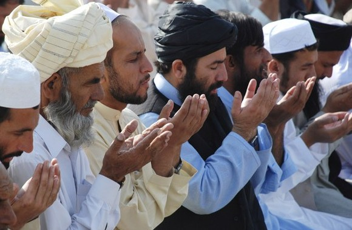
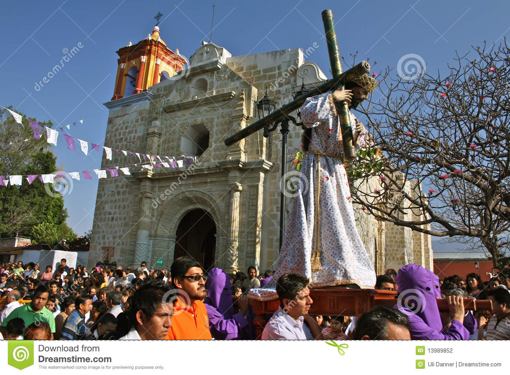
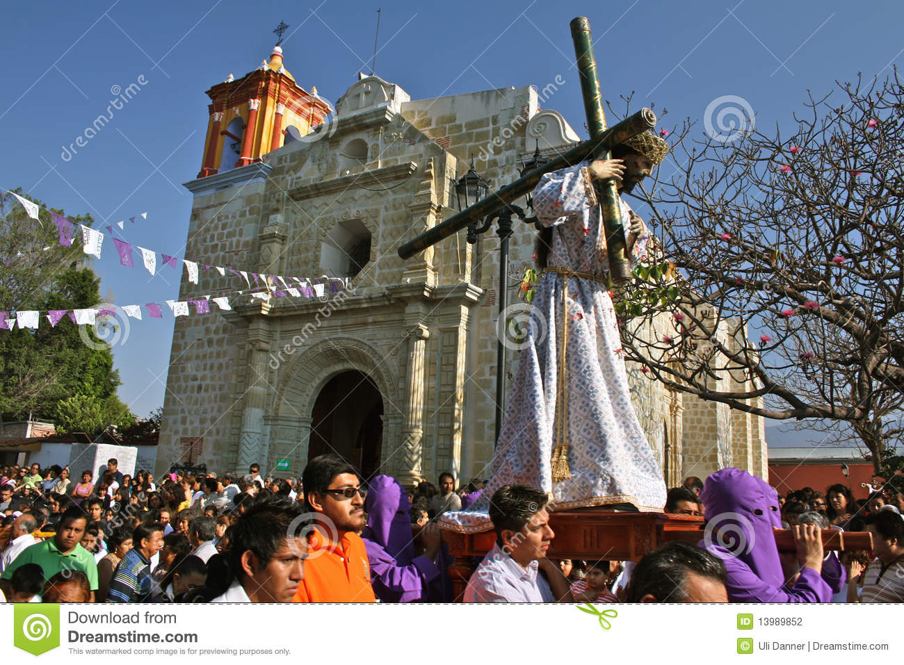

Catolicismo
El término se refiere a los cristianos pertenecientes a la Iglesia católica, compuesta por 23 iglesias sui iuris que se encuentran en completa comunión con el papa y que en conjunto reúnen a más de mil millones de fieles (una sexta parte de la población mundial y más de la mitad de todos los fieles cristianos). La principal característica distintiva de la Iglesia católica es el reconocimiento de la autoridad y primacía del papa, obispo de Roma. Sin embargo hay varias Iglesias que comparten también el adjetivo calificativo de «católicas», como la Iglesia ortodoxa y las Iglesias ortodoxas orientales, la Iglesia asiria del Oriente y las Iglesias que constituyen la Comunión anglicana.

Los Testigos de Jehová son una denominación cristiana milenarista, antitrinitarista y antiecuménica, con creencias heterodoxas distintas a las vertientes principales de la cristiandad.1 2 Se consideran a sí mismos una restitución del cristianismo primitivo, creencia que se basa en su propio entendimiento de la Biblia, preferentemente de su Traducción del Nuevo Mundo de las Santas Escrituras, y que tiene como propósito santificar el nombre de Jehová.

Musulmán es una palabra árabe que significa «el que se somete (a Dios)». Musulmán es la persona cuyo credo religioso es el islam. La palabra árabe muslim, femenino muslima, significa «el sometido o entregado a la voluntad de Dios». Así, todo aquel que ha aceptado la sumisión a Dios, puede ser llamado musulmán sin temor a equivocarse.
Por eso profetas anteriores a Muhammad,
como Abraham, Moisés y Jesús así como la Virgen María y otros.

 
